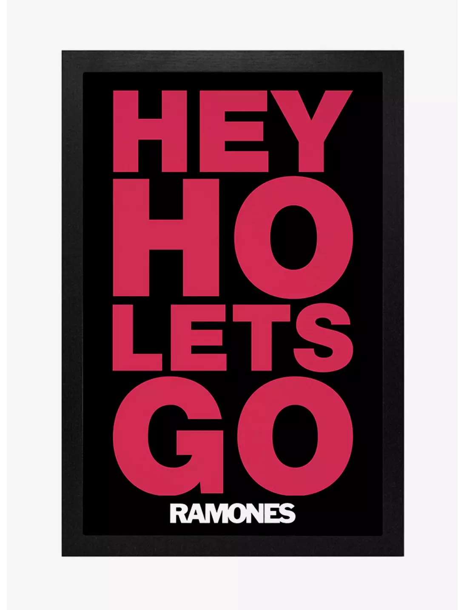

1 + 6[1] 75 * 2[1] 108 - 15[1] -716/2[1] 85**2 [1] 25sqrt(36)[1] 6Este material foi desenvolvido pelo Prof. Daniel Pagotto para a disciplina de Análise e Comunicação de Dados.
A primeira ferramenta de análise de dados que vamos aprender é a linguagem de programação R.

R também é uma linguagem de programação, assim como Python, que vocês estão aprendendo na disciplina de algoritmos.
Este documento tem algumas seções:
A interface do RStudio (ou Posit Cloud);
Fazendo operações básicas;
Carregando os dados e realizando os primeiros tratamentos;
Realizando análises descritivas.
Professor, o que estes dois programas têm em comum?
E o que eles têm de diferente?
Você consegue acessar o Posit Cloud por meio deste link. Basta fazer o login usando uma conta do google ou criar sua conta pelo email que quiser.
A carinha do Posit Cloud é esta.

Por enquanto, não vou explicar o que significa cada campo e botão.
Sabe jogo de tabuleiro? Você lê as regras e não entende de primeira. Só depois de algumas rodadas do jogo que você realmente entende de fato como funciona. Aqui é igual.

Por hora, só quero que você faça uma coisas:
1) Clique em “R Script” conforme o print;

2) O script será aberto conforme destacado de vermelho. Digite alguma operação como esta e aperte ctrl + enter e veja que o R vai executar a operação soltando um resultado (output) lá embaixo.

Já devem ter visto na disciplina de algoritmos, mas reforço aqui: pensem que um computador sempre vai fazer três coisas - receber uma entrada de dados, um processamento e uma saída. Neste pequeno trecho de código temos uma entrada
1 + 2, um processamento (a operação sendo executada) e uma saída lá embaixo (o resultado da operação).
Antes de iniciar a análise de dados, vamos fazer algumas operações básicas.
Como qualquer linguagem de programação, o R é uma calculadora.
Teste rodar algumas operações básicas e veja os resultados.
Lembre-se: coloque a operação e com o cursos em cima da linha e aperte ctrl + enter para rodar.
1 + 6[1] 75 * 2[1] 108 - 15[1] -716/2[1] 85**2 [1] 25sqrt(36)[1] 6sqrt vem de square root, raiz quadrada em inglês.
A ordem de execução é semelhante da matemática! Multiplicação e divisão sempre virão antes. Porém, se você quiser definir outra ordem de execução, use parênteses. Veja abaixo.
5 + 6 * 6[1] 41(5 + 6) * 6[1] 66Note que na primeira operação teremos a multiplicação sendo executada primeiro, o que resulta 41. Já na segunda operação temos a soma entre parênteses sendo executada antes, o que resulta em 66.
Observação! Sempre que tiver um # no código, o R entende que temos um comentário e, portanto, ele não executa a linha, ou seja, ele pula a linha. Fazer comentários ao longo do código é uma boa prática para que outras pessoas entendam o que você está fazendo.
Exercício: suponha que a gente tenha cinco notas da disciplina de ACD, conforme a seguir, calcule a média.
| ID aluno | Nota |
|---|---|
| 1 | 6,5 |
| 2 | 8 |
| 3 | 9,2 |
| 4 | 4,6 |
| 5 | 7,6 |
Vamos calcular a média. Atenção! Você tem que usar ponto (e não vírgula) para separar as casas decimais!
(6.5 + 8 + 9.2 + 4.6 + 7.6)/5[1] 7.18Exercício
Faça um exercício semelhante para calcular a média de outro conjunto de notas.
| ID aluno | Nota |
|---|---|
| 6 | 7 |
| 7 | 9,7 |
| 8 | 4,2 |
| 9 | 6,6 |
| 10 | 7,2 |
Faça o cálculo!
Assim como no python, você pode atribuir valores a uma variável. A atribuição é útil para reaproveitar valores em operações.
Vamos fazer uma clássica operação: calcular o índice de massa corpórea.
peso = 94
altura = 1.78
peso/(altura**2)[1] 29.66797Eu posso inclusive guardar o resultado em uma nova variável.
imcDaniel = peso/(altura**2)Observação! Ao criar nome de variáveis é importante se atentar a algumas regras!
Não coloque palavras separadas (ex.:
imc Daniel);Não coloque caracteres especiais, como acentos, cedilhas) (ex.: ao invés de
pesoConceição, utilizepesoConceicao)
Pronto!

Agora a parte legal começa!

Nós vamos fazer o carregamento